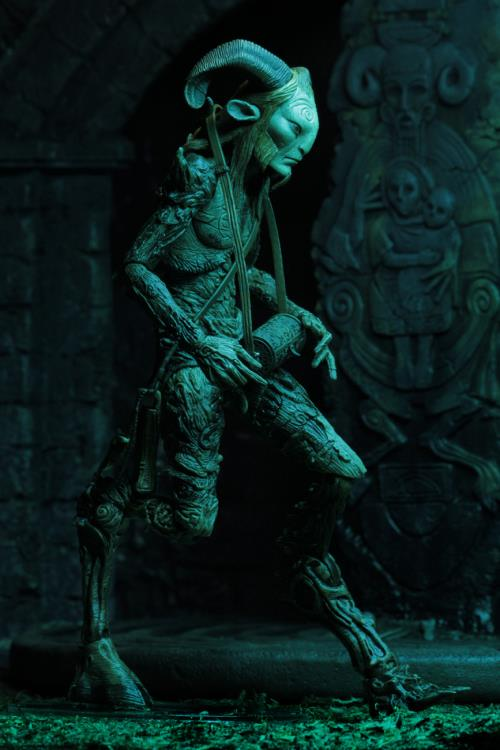

Creature of the Woods
Fauns are bipedal creature with the legs and tail of a goat and the head, arms and torso of a man and is often depicted with goat's horns and pointed ears. These creatures in turn borrowed their appearance from the god Pan of the Greek pantheon. Romans believed fauns inspired fear in men traveling in lonely, remote or wild places. They were also capable of guiding humans in need.
